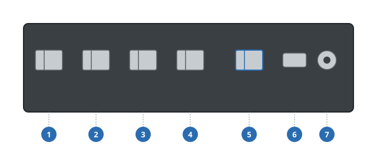

Especificaciones
El capítulo de referencia: estándares inalámbricos, conexiones, alimentación, dimensiones físicas y comportamiento de los LEDs — el tipo de contenido que más se consulta en lugar de leerse de principio a fin (pruebe el cuadro de búsqueda en el encabezado para cualquiera de estos).
Estándares Inalámbricos
| Estándares | IEEE 802.11a/b/g/n/ac (Wi-Fi 5) |
|---|---|
| Bandas de frecuencia | 2,4 GHz y 5 GHz, dual-band simultáneo |
| Velocidad máxima de enlace | Hasta 1200 Mbps (5 GHz) + 300 Mbps (2,4 GHz) |
| Antenas | 2× internas, ganancia de 5 dBi |
| Seguridad | WPA2-PSK, WPA3-SAE |
Rendimiento
Hasta 32 clientes inalámbricos conectados simultáneamente, y enrutamiento Gigabit a velocidad de línea entre el puerto WAN y cualquier puerto LAN en condiciones típicas de tráfico doméstico o de pequeña oficina.
Especificaciones Técnicas
Tablas como las siguientes son comunes en manuales de producto y hojas de datos — copie este patrón para sus propias tablas de conexiones, alimentación y especificaciones físicas.
| Conector | Tipo | Descripción |
|---|---|---|
| LAN 1–4 | RJ45, 10/100/1000 Mbps | Puertos Ethernet Gigabit para dispositivos de la red local |
| WAN | RJ45, 10/100/1000 Mbps | Puerto de conexión a internet |
| USB | USB 2.0 Tipo-A | Almacenamiento externo o accesorios |
| Alimentación | Conector DC, 12 V / 1 A | Entrada del adaptador de corriente externo |

- 1 Puerto LAN 1
- 2 Puerto LAN 2
- 3 Puerto LAN 3
- 4 Puerto LAN 4
- 5 Puerto WAN
- 6 Puerto USB 2.0
- 7 Entrada de alimentación
| Fuente de alimentación | Entrada 100–240 V AC, 50/60 Hz — Salida 12 V DC / 1 A |
|---|---|
| Consumo de energía | Hasta 12 W |
| Dimensiones (An × Pr × Al) | 180 × 120 × 30 mm |
| Peso | 350 g |
| Temperatura de operación | 0 °C a 40 °C |
| Humedad de almacenamiento | 10% a 90%, sin condensación |
Indicadores LED
Una tabla de estado de LEDs es otra página casi universal en los manuales de telecomunicaciones — reutiliza el mismo patrón .spec-table de arriba, solo con encabezados de columna diferentes.
| LED | Color / estado | Significado |
|---|---|---|
| Power | Verde fijo | Dispositivo encendido y listo |
| Power | Rojo parpadeante | Falló la autoprueba de inicio — vea Solución de Problemas |
| WAN | Verde fijo | Conexión a internet activa |
| WAN | Apagado | No se detecta cable o el enlace está caído |
| LAN 1–4 | Verde parpadeante | Enlace activo, transfiriendo datos |